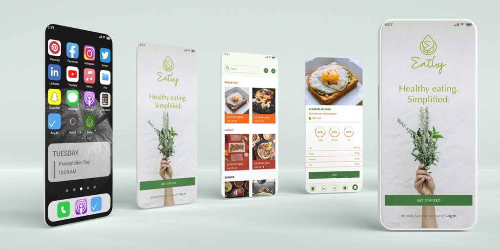

Visual hierarchy supports quick browsing and confident selection.
Case study
EATHY
A food-focused product concept with bright interface presentation, clear feature framing, and a mobile experience designed for quick decisions.

Challenge
EATHY needed a product experience that could make food discovery and decision-making feel fast, visual, and easy to trust.
The main challenge was presenting appetite-driven content while keeping the interface useful and organized.
Approach
- Identified the moments where users need quick visual confidence before taking action.
- Structured screens around product imagery, clear labels, and direct calls to action.
- Used bright UI presentation while maintaining readable type and spacing.
- Prepared the case study to show both product personality and interface logic.
Design decisions
Each screen communicates what the user can do next.
The visual direction feels energetic without losing structure.
Outcome
The final direction gives EATHY a stronger product narrative and a polished set of screens for product and client review.
Next iteration: add ordering flow details, validation feedback, and usability results.